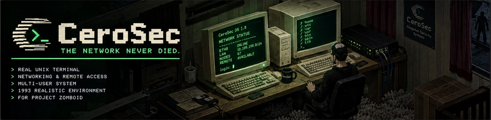
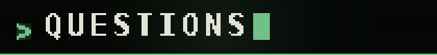
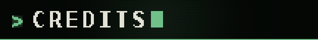

CeroSec - Unix Network Terminal
Made by Konijima · Project Zomboid · Build 42

The desktop computers of Knox County still work. This one runs Unix.
CeroSec puts a small 1993 Unix on the vanilla desktop computers already standing in the world. Right-click one to switch it on, right-click again to sit down at it, and a green 60x20 terminal opens on a BIOS line and a login prompt. Behind it: files, permissions, accounts, a shell with pipes and cron, the building's own doors and lights under /dev, and three ways off the machine.
The disk belongs to the computer, not to you. Walk away and come back to the same session, still logged in.
No dependencies. Build 42. Safe to add to a save you are already playing.
How a session looks. Sixty columns, and every line one this machine really prints.
CeroSec BIOS 1.0 -- (c) 1993 CeroSec Systems Memory test: 640K OK Detecting drives ... hda 64K Ethernet: eth0 10.109.190.4 Phone line: 555-0417 Callsign: KD4AXR Booting from hda ... acct-12-06 login: admin Password: admin@acct-12-06:~$ ls -l drwxr-xr-x admin admin 3 Jul 8 17:22 bin -rw-r--r-- admin admin 412 Jul 8 17:22 handover.txt -rw-r----- admin admin 1104 Jul 6 09:15 ledger.txt -rw-r--r-- admin admin 286 Jul 2 11:40 memo.txt admin@acct-12-06:~$ dev door0 exterior 1E 0 W locked light0 office 1E 0 on lock0 exterior 1E 0 W locked admin@acct-12-06:~$ dev light0 off admin@acct-12-06:~$ crontab -l 0 21 * * 1-5 sh /home/admin/bin/total.sh admin@acct-12-06:~$ cu -l /dev/radio0 CeroSec Systems TNC-200 (TNC-2 compatible) cmd: C KE4QWZ *** CONNECTED to KE4QWZ login:
Knox County had computers in it, and people were using them, so a machine nobody has switched on yet comes up as somebody's. A sandbox option, on by default; a machine already switched on is never touched.
Every disk lives on the server and every command runs there. A client asks; it never decides, and no client is ever told a password.
The budgets are why it is safe on a public server. A script is stepped, never looped to the end, so a while true somebody left running costs that machine its own share and nothing else. A disk is 64 KB, a file 4096 bytes, a machine 512 nodes; four jobs is four jobs and the fifth remote session is refused. Nothing a player types is ever handed to Lua. Admins get a debug window and a diagnostics floppy.
Where a real /bin/sh, cron, rlogin or Hayes modem would answer a certain way, this machine answers the same way, refusals included. The commands wear the names 1993 gave them: useradd, never Debian's adduser.
Six things have no 1993 model and are kept anyway. Rather than pass them off quietly they are printed in the in-game Volume 1, on a page called What is not Unix here: help, dev, mkpasswd, edit, sudo, and jobs that belong to the machine rather than to the shell.

Does it need any other mod? No. No dependencies, no bundled libraries, vanilla Lua only.
Can I add it to a save I am already playing? Yes. The computers were always there; this gives them a disk the first time you switch one on. Removing it leaves them as the furniture they were.
Will it slow the game down? It is budgeted rather than trusted: the ceilings above are the whole of what one computer can cost. Nor can an update break what you built, because every release photographs the shape it writes to the save and the next has to walk it forward.
Does it work in multiplayer? Yes, and it was built that way rather than adapted. Dedicated-server testing is next on the list, so if you run one, say what you find in the comments.
Does it conflict with other mods? Nothing known: it adds its own items and menu entries and overrides no vanilla file. A mod that replaces the desktop computer object itself would collide.
Build 41? No, and there will not be one. Build 42 only, on 42.20 and up.

Made by Konijima.
Written from scratch in vanilla Lua against Build 42.20.4, with every engine call proven to exist before it was called. English and French are in the box; another language would be welcome.
Sounds and floppy disk art: from Konijima's earlier Computer mod, reused by their author.
Version 0.1.0. A small first release, not a broken one: everything on this page is finished, tested and documented. Source and full documentation are at github.com/Konijima/pz-cerosec, which opens at release; bugs go in the comments.
If it earned it, a rating and a favourite put it in front of the next person looking for one.
Workshop ID: (assigned at release)
Mod ID: CeroSec